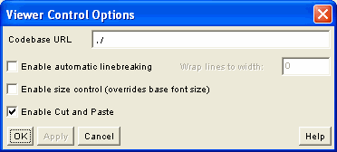

Viewer Control Options
Open the Viewer Control Options panel from the Options menu on
the WebEQ Publisher main screen. These options only affect Viewer
Control code generated by WebEQ Publisher.

- Codebase URL
- Set the codebase in the applet tags; i.e., the directory
containing the WebEQ classes. This can be a fully qualified URL, or
relative to the resulting HTML document.
- Enable automatic linebreaking
- Determines whether the Viewer Control will line wrap expressions which
are wider than its width dimension. This box is unchecked by default.
Typically this option is only used when the Viewer Control is to display
equations generated dynamically via JavaScript, or some other
mechanism. Note that line wrapping is only useful if the vertical
height of the Viewer Control applet is sufficiently large. If you use
this option, you should also specify the maximum width in characters
of the wrapped lines (the default is 400 characters).
- Enable size control
- When this option is checked, readers can open a font size control
panel by right clicking on any Viewer Control applet in a page. From
the control panel, a reader can change the base font size in the
equation from which the control panel was opened, or for all equations
displayed by Viewer Control applets in that page. When this option is
not checked, the font size control panel will be disabled in Viewer
Control applets.
- Enable Cut & Paste
- Determines whether mouse selection, and cut and paste, are enabled in
Viewer Control equations. Note that readers who have not installed
the WebEQ Viewer control locally may have security alerts appear
when they attempt to cut and paste, or cutting and pasting may simply
fail. When that happens, the Viewer Control open a pop up window to
display the selected MathML. By default, this feature is enabled.
- Generate code to prompt readers to install the Viewer Control
- This option, along with the accompanying option to specify a path
to the installer script, specifies whether the Publisher should
generate header code in the output file that causes a window to pop up
prompting readers to install the Viewer Control if they haven't already
done so. See the WebEQ Developers Suite documentation on distributing the Viewer Control
Applet from a Web server.